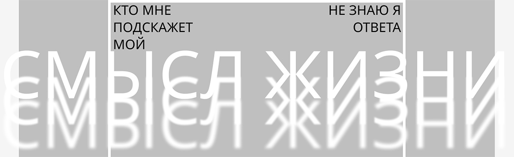

 СМЫСЛЖИЗНИСмысл жизниэто когда... живёшь, любишь,дышишь, справляешься,умирашь за кого-то,становишься собой но бывают и не смыслы,а контейнеры смыслов... Нам свойственно искать смыслы. Нам свойственно и не искать их. Ищешь и не находишь. Не ищешь и не находишь. Зачем тогда нам наши одноместные скелеты на время земной жизни?